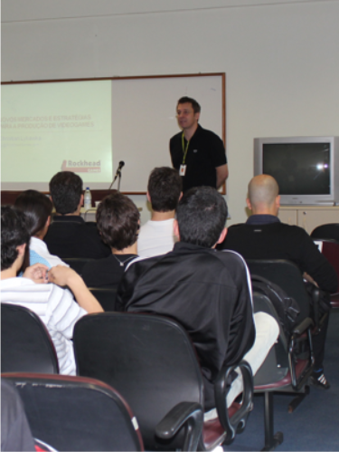

Esta atividade possui 4 áudios. Ouça os áudios destas quatro pessoas e responda às questões.
Lista de áudios
Destaques:
O DAINF desenvolve projetos de pesquisa e extens�o envolvendo alunos dos cursos ligados ao departamento, inicia��o
cient�fica e projetos de final de curso.
O Departamento possui dois programas PET ligados aos seus cursos de gradua��o, com um total de 20 alunos participantes;
Pr�mio de Melhor Tese no XXVI SIBGRAPI. O Professor Dr. Rodrigo Minetto, do Departamento Acad�mico de Inform�tica (DAINF)
da Universidade Tecnol�gica Federal do Paran� (UTFPR), recebeu o pr�mio de melhor Tese de Doutorado no Workshop de Teses
e Disserta��es do XXVI SIBGRAPI, Conference on Graphics, Patterns and images, com o artigo "Text Recognition and 2D/3D Object Tracking",
sobre detec��o e rastreamento de textos em cenas urbanas. O evento aconteceu em Arequipa no peru em agosto de 2013;
A equipe que participa da Maratona de Programa��o promovida pela SBC/ACM foi campe� da regi�o sul na �ltima edi��o do evento (2012),
tendo obtido medalha de bronze na competi��o nacional;
Uma equipe do departamento foi campe� da competi��o nacional de Futebol de Rob�s - categoria simula��o 2D em 2011, tendo obtido a terceira
coloca��o no campeonato latino-americano de 2012, e participado do campeonato mundial;
Equipes do ensino m�dio/t�cnico, treinadas por aluno do PET obtiveram coloca��o de destaque na Olimp�ada Brasileira de Inform�tica
(uma medalha de ouro e uma honra ao m�rito) na edi��o de 2012.
Estudantes em Laborat�rio de Pesquisas. Cr�dito da Imagem: Rede TO
Cursos de Gradua��o:
Tecnologia em Sistemas para Internet
Objetiva formar profissionais nas �reas de desenvolvimen-to, ger�ncia, projeto, instala-��o e administra��o de am-bientes em redes de com...
O departamento atrav�s de um compromisso com seus discentes e com toda a comunidade acad�mica promove eventos de extens�o periodicamente.

Edi��o anterior da SEMINFO
VII SEMINFO Semana Acad�mica de Inform�tica da Universidade Tecnol�gica Federal do Paran� - Campus Curitiba
Nos dias 03 a 07 de maio de 2010 ocorrer� a VII SEMINFO - Semana Acad�mica de Inform�tica da Universidade Tecnol�gica Federal do Paran� - Campus Curitiba. O evento, organizado pelos alunos dos Cursos de Tecnologia em Sistemas para Internet, Engenharia de Computa��o e Bacharelado em Sistemas de Informa��o da Universidade Tecnol�gica Federal do Paran� (antigo CEFET) acontecer� no Miniaudit�rio da UTFPR. O evento, organizado pelos alunos acontecer� no Miniaudit�rio da UTFPR.